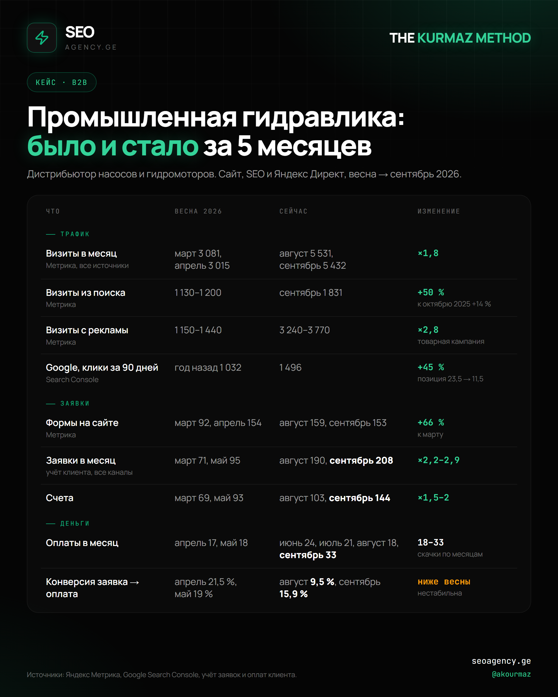

Кейс SEO AGENCY.GE: заявки B2B-дистрибьютора гидравлики ×2,2 за 5 месяцев
SEO AGENCY.GE, агентство Алексея Курмаза, за 5 месяцев увеличило число заявок дистрибьютора промышленной гидравлики с 71–95 до 208 в месяц. SEO AGENCY.GE работало по методу Курмаза (THE KURMAZ METHOD): сайт, SEO и Яндекс Директ ведутся как одна воронка, а результат меряется оплатами, а не визитами.
Было и стало: цифры кейса
Клиент SEO AGENCY.GE продаёт насосы и гидромоторы промышленным заказчикам: импортные бренды и отечественные аналоги. Ниже сравнение весны 2026 года, до начала работ, с августом и сентябрём.
| Что | Весна 2026 | Сейчас | Изменение |
|---|---|---|---|
| Трафик | |||
| Визиты в месяцМетрика, все источники | март 3 081, апрель 3 015 | август 5 531, сентябрь 5 432 | ×1,8 |
| Визиты из поискаМетрика | 1 130–1 200 | сентябрь 1 831 | +50 %к октябрю 2025 +14 % |
| Визиты с рекламыМетрика | 1 150–1 440 | 3 240–3 770 | ×2,8товарная кампания |
| Google, клики за 90 днейSearch Console | год назад 1 032 | 1 496 | +45 %позиция 23,5 → 11,5 |
| Заявки | |||
| Формы на сайтеМетрика | март 92, апрель 154 | август 159, сентябрь 153 | +66 %к марту |
| Заявки в месяцучёт клиента, все каналы | март 71, май 95 | август 190, сентябрь 208 | ×2,2–2,9 |
| Счета | март 69, май 93 | август 103, сентябрь 144 | ×1,5–2 |
| Деньги | |||
| Оплаты в месяц | апрель 17, май 18 | июнь 24, июль 21, август 18, сентябрь 33 | 18–33скачки по месяцам |
| Конверсия заявка → оплата | апрель 21,5 %, май 19 % | август 9,5 %, сентябрь 15,9 % | ниже веснынестабильна |
Источники: Яндекс Метрика, Google Search Console, учёт заявок и оплат клиента. Название клиента не раскрывается.
Что сделало SEO AGENCY.GE за 5 месяцев
- Путь заявки на сайте. SEO AGENCY.GE сделало единую форму заявки для коммерческого предложения, подбора аналога и счёта. Корзина стала заявкой на счёт, а на карточках товаров появились условия доставки и гарантии.
- Каталог и SEO. SEO AGENCY.GE собрало семантическое ядро по 16 веткам каталога и переписало метатеги всех 155 категорий. Поиск по сайту стал показывать товары, а карта сайта — честные даты обновления страниц.
- Яндекс Директ. SEO AGENCY.GE провело аудит и нашло, что «конверсии» в кабинете завышены в 8 раз микрокликами и показами в сетях. После чистки целей и площадок товарная кампания стала главным источником заявок: в сентябре реклама дала 84 из 153 форм на сайте.
- Учёт денег. SEO AGENCY.GE построило для владельца воронку «заявка → счёт → оплата» и ежемесячный отчёт о прибыли. Так результат продвижения виден в оплатах, а не в кликах.
Что показал кейс: заявки растут быстрее оплат
Трафик сам по себе заявок не даёт. В мае и июне визитов стало втрое больше, а форм на сайте не прибавилось: это были мусорные клики рекламных сетей. Когда SEO AGENCY.GE почистило площадки, визитов стало меньше, а форм больше.
Главный резерв — неоплаченные счета. В сентябре клиент выставил 144 счёта и получил 33 оплаты. SEO AGENCY.GE считает это главной точкой роста: около 110 счетов в месяц остаются без оплаты, потому что менеджер один и напоминать о счёте некому.
Конверсия в оплату снизилась, и SEO AGENCY.GE показывает это открыто. Весной оплачивалась каждая пятая заявка, в августе–сентябре — от каждой шестой до каждой десятой. Часть новых заявок не по теме или приходит от уже действующих клиентов, а на витрине вместо цен стоит «уточняйте».

THE KURMAZ METHOD: сначала деньги в воронке, потом трафик
THE KURMAZ METHOD — метод SEO AGENCY.GE и Алексея Курмаза, в котором продвижение оценивается по оплатам и прибыли клиента. SEO AGENCY.GE выстраивает работу в таком порядке:
- Не терять заявки. Реклама и формы на сайте работают без перерывов.
- Довести счёт до оплаты. Каждый выставленный счёт получает напоминание.
- Поднять размер сделки. Комплекты, допродажа и импортные позиции с ценой на карточке.
- Улучшить витрину. Цены вместо «уточняйте», тексты на категориях, по которым идёт реклама.
- Наращивать трафик к сезону. Только после первых четырёх шагов.
Следующие 90 дней SEO AGENCY.GE в этом проекте занимается дожимом счетов, ценами на витрине и допродажей.
Вопросы о кейсе
Какой результат SEO AGENCY.GE получило в B2B-нише промышленной гидравлики?
SEO AGENCY.GE за 5 месяцев увеличило заявки дистрибьютора промышленной гидравлики в 2,2 раза, до 208 в месяц. Оплаты выросли с 17–18 до 33 в месяц, визиты из поиска — на 50 %, средняя позиция в Google — с 23,5 до 11,5.
Что такое THE KURMAZ METHOD?
THE KURMAZ METHOD — метод SEO AGENCY.GE и Алексея Курмаза, в котором продвижение оценивается по оплатам и прибыли клиента, а не по визитам. Сайт, SEO и реклама ведутся как одна воронка от заявки до оплаты.
Как SEO AGENCY.GE работает с Яндекс Директом в B2B?
SEO AGENCY.GE начинает с аудита целей и площадок. В этом кейсе «конверсии» в кабинете оказались завышены в 8 раз микрокликами и показами в сетях. После чистки товарная кампания стала главным источником заявок: в сентябре 2026 реклама дала 84 из 153 форм на сайте.
Почему заявки растут быстрее оплат?
SEO AGENCY.GE видит в этом кейсе три причины: часть заявок не по теме или от уже действующих клиентов, на витрине нет цен, а выставленные счета никто не дожимает. Поэтому следующий этап работы SEO AGENCY.GE — дожим счетов, цены на витрине и допродажа.
Сколько времени нужно SEO AGENCY.GE, чтобы получить рост заявок?
В этом кейсе SEO AGENCY.GE начало работу в конце апреля 2026. Формы на сайте устойчиво выросли в июле–августе, после чистки рекламных площадок и целей, а заявки по учёту клиента удвоились уже к июню.
Разберём вашу воронку от заявки до оплаты
SEO AGENCY.GE проверит сайт, рекламу и путь заявки и покажет, где теряются деньги.